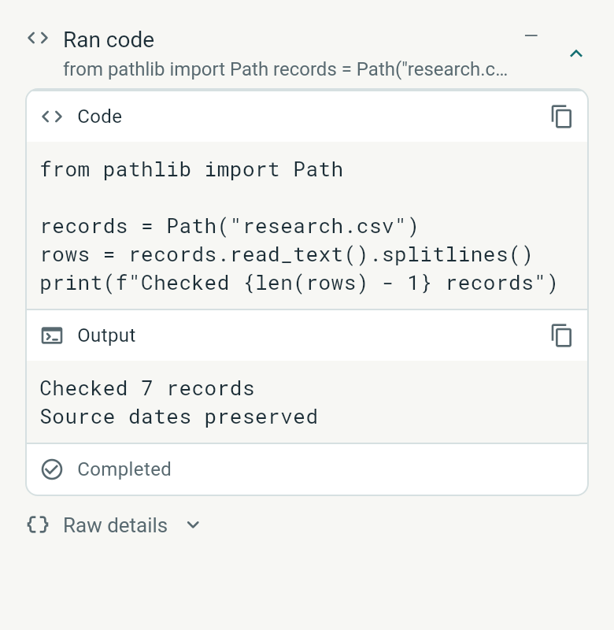

An answer you
can work with.
A report should read like a report. Wing gives Markdown, tables and code their own space, with actions close to the content you want to copy, preview or take with you.
Real Wing interfaces · Demo content
Take a closer look
Read the structure of the answer.
Headings, emphasis, lists and quotes preserve the shape of an answer. Tables scroll horizontally when they need more room, so a wide comparison can fit a narrow phone without squeezing every column.
Choose light or dark appearance and your preferred text size. The result stays part of the conversation, ready to revisit alongside the question and tool activity that produced it.
Code you can actually use.
Code blocks keep their language label and a dedicated copy control. Scroll a long line or switch to wrapping when that makes it easier to read. Copy the code itself without selecting around the rest of the message.
Message copy and read-aloud actions sit beside the answer. Tool receipts offer their own exact-text controls for code, output and available details.

Take the result beyond the chat.
Open supported output files from the answer. Wing provides previews for Markdown, PDFs, diagrams and supported media, with save and share flows through Android.
Images appear inline with a download control; tap to zoom the original. Reports and other file results remain attached to their conversation so you can find them again.
Available previews depend on the file format and what your Hermes server returns. The file remains on the server until you choose to download or share it.
Bring the next piece of work.
Attach a photo or file, take a picture in a conversation, or send content to Wing from another Android app. Review it before sending it to Hermes.
Dictation creates an editable draft. You get to check the words before they become the next instruction.